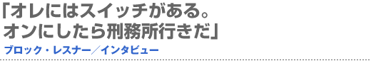
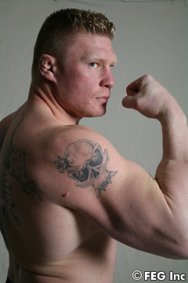
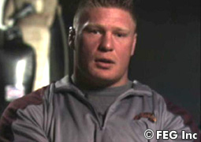
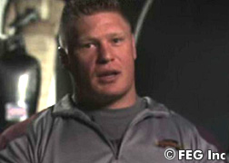
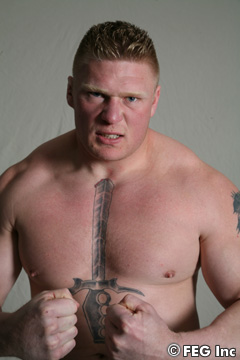

チェ・ホンマンとの世紀の対決が決まった、ブロック・レスナー。『SoftBank presents Dynamite!! USA in association with ProElite』（6月2日＝現地時間、アメリカ・『ロサンゼルス・メモリアル・コロシアム』）では、どんな闘いを見せるのか？ 現地取材インタビューをお届けする！
『大きな夢を持て』と言いたい
 ――ブロックさん、子供の頃のあなたの話を聞かせてください。
レスナー オレは、小さな町の酪農場で育った。子供時代はとても素晴らしかったね。兄が二人いたんだけど、ともにスポーツ系でね。それでスポーツに興味を持ったんだ。レスリングを5歳で始めた。牛から牛乳を搾ったり、肥料を運んだり、牧草を作ったり、すべてが好きだったね。親はいつも働いていたから、手伝わないといけないと思ったんだ。
――大変だったんですね。
レスナー 別の生活を知らなかったからね。必ず何か仕事があったし。幼い頃から責任感があったんだ。7歳でトラクターを運転していたよ。今の時代は14歳から車の運転を習っている子供がいるよね。親父がオレを信じてくれたことに感謝しているし、親父もオレが手伝うことで助かったと思う。オレは手伝えて嬉しかったね。金にはならなかったけど（笑）。今の自分があるのは、昔からあんなに責任を持つことができたおかげだ。
――小さい頃から才能があったのでしょう。
レスナー 昔から一番スキルのある、速いレスラーじゃなかった。ただ、何をやらないといけないかをちゃんと理解していたのは事実だ。ウェイトルームでも、練習でもね。だから若い頃から、対戦相手より強さはあったよ。農場での仕事で努力をすれば、いいことがあると分かっていたんだ。仕事が終わるまで自慢するな、という諺があるくらいだからね。すべてやっていることに意味がある。仕事が終わって、満足のいく仕事ができたことが大事なんだ。なんでも中途半端にできるけど、いくら自分の仕事が好きな人でも、来年になればいい結果が出るとは限らない。それを若い頃から農場の仕事で分かっていた。何時間もウェイトルームやジャンプロープやレスリングマットに向かっていた。他の人と自分の差を付けたかったからな。オレはお前らとは違うぞってことを。だから、家のなかでも中途半端なことはやらない。小さな町にいるのは悪いことじゃないけど、違う人生を送りたかった。失敗することを恐れてはいない。これは大きいと思う。成功するためには、まず失敗を経験しないとな。どんな子供にもそう言っている。どんな国でもな。子供にサインをするときは『大きな夢を持て』と書くんだ。成功したければ、境界線から出なければいけない。
なぜか自分のなかに“怒り”がある
 ――なぜMMAへの転向を決意したのでしょうか。
レスナー まだ29歳だし…なんでかな、昔から体を動かしていないとダメなんだ。レスリングにしても、アメフトにしても、そういう精神なんだよ。実際にMMAが大きく普及していて、レスラーから成功しているファイターを見て、自分もレスリングスキルを活かしたいと思ったんだ。ただレスリングだけじゃない。他にムエタイ、柔術なども1年以上、練習している。
――何かが始まりそうですね。
レスナー そうだ。いよいよ次の章が始まるな。アマレス、アメフト、プロレスをやって、これからはプロの格闘家としての姿を見てほしい。怖いことはないね。いつも違うことをやるのが好きだからな。リングに入って、闘って金をもらう。単純なことだ。でも、まったくナメていない。MMAを習うのは好きだし、こんなに自然にできたことはない。6月2日は大勢の観客の前でリングに入るよ。
――心配する人もいますが。
レスナー 今でも『あいつはアメフトにも入れなかった』と言うヤツもいるが、自分でやってみろと言いたい。オレは実際にやってみたら、「経験が足りなかったからヨーロッパでプレーしてほしい」と言われたんだ。しかしオレはミネソタ・バイキングスのためにプレーしたかったから、やらないと決めたんだよ。
――闘いに飢えていますか？
レスナー ＭＭＡは金がいいからってのもあるけど、ケンカもしたいんだよ。昔はたくさんできたけど、今はケンカをすると訴えられて高くつくからな（苦笑）。なぜか知らないが、自分のなかに“怒り”があるんだ。今は誰でもすぐに弁護士を呼ぶけど、昔みたいに己の拳だけで解決できたらいいな。たとえば借金でも、今はすぐに裁判に持ち込むが、叩き潰してから金を取り戻すべきだ。そう思わないか？ なにかが曲がっているなら自分で直すっていう、それが最高じゃねえか!?（笑）
負けるとしても、KOか一本だ
 ――MMA挑戦を決めたときのファンの反応はどうでしたか。
レスナー 家族と親友が思っていることしか興味はないけど、自分で危険だと思ったらリングに上がらないね。負けるとしたらKOかサブミッションだろ？ そんなに危険は感じないな。KOされたこともあるけど、オレはまだ生きてるじゃねえか。自分で決めていることだから、他のヤツが考えることには興味がない。自分の人生だからな。死ぬときは天国に行くつもりでいるよ。
――……。
レスナー 世の中は自分の仕事をキライなヤツが多いけど、オレは自分の仕事が好きだぜ。誰もいなくてもファイトをするよ。客がいなくて、今日は中止だと言われてもやるつもりさ。ファンに好かれればそりゃ嬉しいけど、100％自分のためにやっていることだからね。自分の天職だぜ、これは。
――練習はどうしているのでしょうか。
レスナー レスリングスキルを活かしたくて、マーティ（モーガン）に頼んだ。あとはグレッグ（ネルソン）にも依頼して、彼らの優れた経験を利用し、オレの立ち技、柔術を全部、合わせてもっといい自分を作り出しているところだ。自分の周りにはなるべくいい人を置く。いいコーチはいるし、いいトレーニング哲学もある。
――その哲学とは？
レスナー ファイターになること。それも、レスリングも使える多角的なファイターになることだ。リングに入って発揮するまでは分からないが、ヘビー級でオレよりレスリングができる奴はいない。それは分かっている。立ち技でオレに勝つヘビー級がいるかもしれないが、オレをテイクダウンできる選手はいない。改善するところ？ それはあるだろ。リラックスした奴は一番、早くやられるからな。オレは自分に従う。ま、たまには嫁さんの言っていることにも気を付けないとな。でも、オレが再びリングに入ることを喜んでいるヤツは多いぜ。
――『Dynamite!! USA』で何を見せたいですか。
レスナー 何も証明するものはない。“オレは一番だ”って言いに行くわけじゃないんだ。ただ闘いたいだけなのさ。新しい記録を作りたいわけじゃない。好きなことをやって、それで金を稼ぎたいだけだ。試合が終わって、オレが立っていて、相手が倒れているシーンを毎日、想像している。ケンカっていうのは、メンタルがすべてといってもいいからな。ファイトが始まる前に負けることもあるんだぜ。頭の方で負けていれば、そうなる。オレか？ メンタルで勝つことが多いな。俺のトレーニングスケジュールは、一般のトレーニングスケジュールとは違う。調整を一番に考えてる。リングに入って、すぐにバテるのはダメだし、ローキックをガードできなくてもダメだ。スタミナが足りなくて、何もできなくても意味がないからな。
ホンマンは立てないし動けない
 ――レスリングのテクニックは、どれくらい使うつもりですか。
レスナー オレは優れたレスラーなんだ。画面の下のテロップで「彼はこういうスタイル…」と見せるとき、「彼は優れたレスラー」だってどうやって分かったんだ？ 誰かがそう言ったからか？ それは、オレが証明して見せたからだ。オレはNCAA王者（全米学生レスリング選手権）だ。対戦相手はオレより背が高くて、体重もある。でも、オレはプロレスでも体格が大きい奴と闘って来たからな。ビビらないぜ。ホンマンは不利だと思うよ。
――彼に言いたいことはありますか？
レスナー オレが訊きたいのは、“そんなに大きいなら、なんでバスケットに行かなかったんだんだ？”ってことだ。オレが同じくらい体が大きかったら、バスケットにしたよ。あとは、6月2日、ホンマンは危険な目に遭うだろうな。ヤツは深い溝に入って、泳げなくなる。可愛そうなヤツだね。
――どんな闘い方をする予定ですか。
レスナー それは言わない。オレはKO、TKO、サブミッションで勝つ。技術が多角的になっているからな。ホンマンを倒したら、バナナの山盛りにアタックするゴリラみたいだな。どうしたらいいかホンマンは分かるはずがない。ホンマンは立てないし、動けない。オレは万力みたいに彼に付いているからな。ヤツはオレより経験があるとは思うけど、どんな目に遭うか分かっていない。オレにはスイッチがあるんだ。そのスイッチを入れたら、痛みを感じない、なんでもできてしまう機械のような気がするんだ。オンにしたら、刑務所行きだろうな。大学時代は2回くらいしか経験はないけど、今は自分でオンにできるようになった。スイッチを入れるぜ。オレのMMAデビューを6月2日、PPVで見ろよ。オレをライブで見たいか？ 6月2日のメモリアル・コロシアムに来てみろよ!!■
|